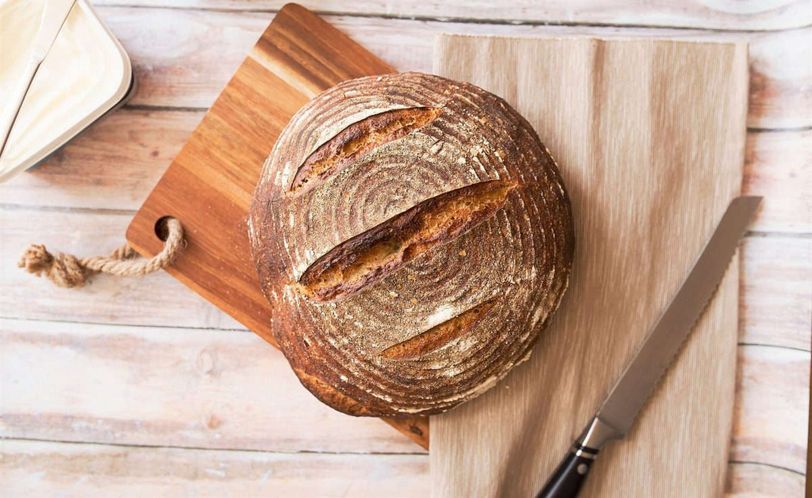

試作サンプル(営業用・非公開)
掲載写真はフリー素材のイメージで、店舗の実際の写真ではありません。日本国内の他地域、海外、撮影地不明のものを含みます。
ホーム

BAKERY Bake-Do ベイク・ドゥ
宮崎市太田の ベーカリー
知りたいことが、ひと目で分かる一枚を目指しました。
いまお伝えできること
- 住所宮崎県宮崎市太田4-3-18アクセスへ
- 電話090-5363-5854電話する
- Instagram@bakery.bake_do開く
- 営業時間準備中(お問い合わせください)
ご来店前に、お電話かInstagramでご確認ください。


このページの構成と文面は、制作側の案にもとづく営業用サンプルです。店舗の公式な見解ではありません。